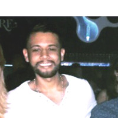
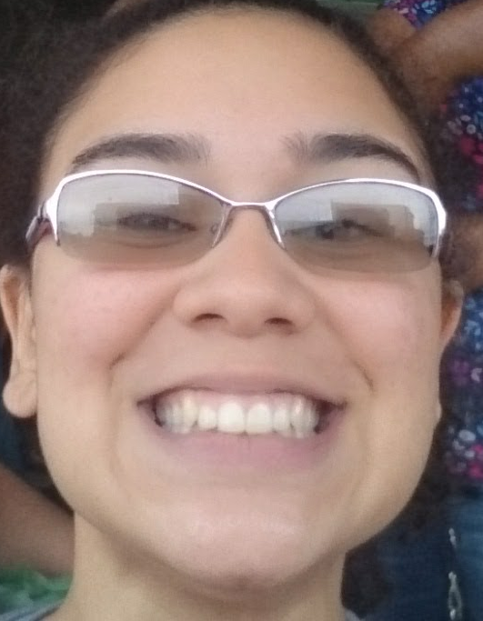

Débora Monteiro
27 anos, desenvolvedora
Nascida e criada em São Paulo Capital, hoje mora em Ribeirão Preto, formada em Informática Biomédica, mestra em Saúde Pública, mãe do Conan e do Brutus, seus dois gatinhos pretos.
Mosião da Massa
24 anos, desenvolvedor
Rafael Mosias ou apenas Mosi ...

Lucas Gomes
30 anos, desenvolvedor
Sou profissional técnico em Telecomunicações com formação técnica em Telecomunicações, atualmente estudante de Analise e desenvolvimento de Sistemas. Tenho nove anos de experiência na área – em que dei suporte e manutenção a vários seguimentos no ramo de Telecomunicações e Eletrônica.

Manu Reis
25 anos, Product Manager
Sou graduanda em Informática Biomédia pela USP de Ribeirão Preto, técnica em Programação de Jogos Digitais pelo Colégio NAVE - RJ, Product Manager na iClinic.